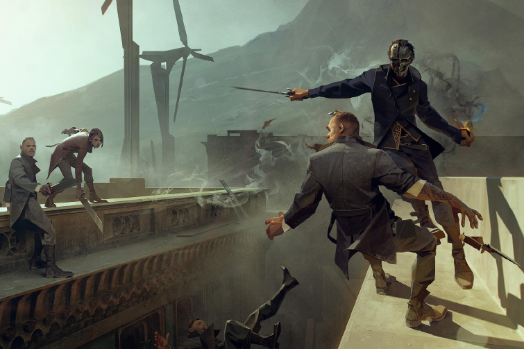
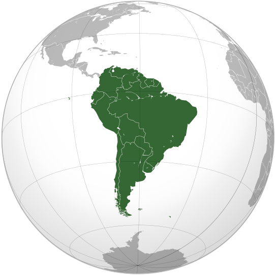
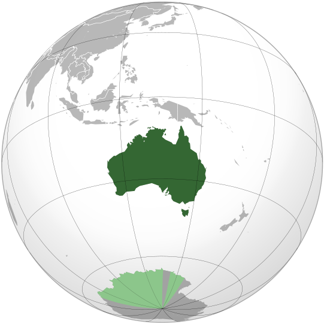

Dashonored - a computer game in the genre of stealth action from the first person with elements of RPG, developed by the French company Arcane Studios. The main designers of the game are the founder of the studio Rafael Kalantonio, and also Harvey Smith, who worked on The Thief: Deadly Shadows and Deus Ex. To participate in the development, Victor Antonov (Half-Life 2, Dark Messiah of Might and Magic), who had previously worked with Arcane Studios, was invited to this project immediately The game takes place in the fictional, epidemic-ridden city of Danwall, to a certain extent copied from London in the Victorian era. The protagonist of the game, lord defender Corvo Attano, was falsely accused of murdering the empress and thrown into prison. However, the remaining "loyalists" consider it useful and help out by organizing an escape. Further, the supernatural being, known as the Alien, is interested in his fate and gives Corvo the opportunity to take revenge on his enemies and restore justice with the help of magical abilities. At the disposal of the player are both conventional weapons and supernatural abilities given to the Alien, such as "Transfer" or "Universe". Missions are non-linear, they can be traversed in several possible ways: when entering into fights with opponents, and by making their way past them and remaining unnoticed, and their goals can not be killed at all if one finds an appropriate way of neutralization.
Dishonored 2
Dashonored - a computer game in the genre of stealth action from the first person with elements of RPG, developed by the French company Arcane Studios. The main designers of the game are the founder of the studio Rafael Kalantonio, and also Harvey Smith, who worked on The Thief: Deadly Shadows and Deus Ex. To participate in the development, Victor Antonov (Half-Life 2, Dark Messiah of Might and Magic), who had previously worked with Arcane Studios, was invited to this project immediately The game takes place in the fictional, epidemic-ridden city of Danwall, to a certain extent copied from London in the Victorian era. The protagonist of the game, lord defender Corvo Attano, was falsely accused of murdering the empress and thrown into prison. However, the remaining "loyalists" consider it useful and help out by organizing an escape. Further, the supernatural being, known as the Alien, is interested in his fate and gives Corvo the opportunity to take revenge on his enemies and restore justice with the help of magical abilities. At the disposal of the player are both conventional weapons and supernatural abilities given to the Alien, such as "Transfer" or "Universe". Missions are non-linear, they can be traversed in several possible ways: when entering into fights with opponents, and by making their way past them and remaining unnoticed, and their goals can not be killed at all if one finds an appropriate way of neutralization.
Tomb Raider Movie
Restart the popular action franchise with elements of fantasy based on a video game about the clever and intelligent woman-archaeologist Lara Croft. The story of Lara's first expedition, which follows the traces of her mysteriously disappeared adventurer father. Its path lies to the islands near Japan, where semi-mythical tombs are located.

North America
North America is a continent entirely within the Northern Hemisphere and almost all within the Western Hemisphere. It can also be considered a northern subcontinent of the Americas. It is bordered to the north by the Arctic Ocean, to the east by the Atlantic Ocean, to the west and south by the Pacific Ocean, and to the southeast by South America and the Caribbean Sea. North America covers an area of about 24,709,000 square kilometers (9,540,000 square miles), about 16.5% of the earth's land area and about 4.8% of its total surface. North America is the third largest continent by area, following Asia and Africa, and the fourth by population after Asia, Africa, and Europe. In 2013, its population was estimated at nearly 565 million people in 23 independent states, or about 7.5% of the world's population, if nearby islands (most notably the Caribbean) are included.

South America is a continent located in the Western Hemisphere, mostly in the Southern Hemisphere, with a relatively small portion in the Northern Hemisphere. It is also considered as a subcontinent of the Americas, which is the model used in Spanish-speaking nations and most of South America. It is bordered on the west by the Pacific Ocean and on the north and east by the Atlantic Ocean; North America and the Caribbean Sea lie to the northwest. It includes twelve sovereign states – Argentina, Bolivia, Brazil, Chile, Colombia, Ecuador, Guyana, Paraguay, Peru, Suriname, Uruguay, and Venezuela – and two non-sovereign areas – French Guiana, an overseas department of France, and the Falkland Islands, a British Overseas Territory (though disputed by Argentina). In addition to this, the ABC islands of the Netherlands and Trinidad and Tobago may also be considered part of South America. South America has an area of 17,840,000 square kilometers (6,890,000 sq mi). Its population as of 2005 has been estimated at more than 371,090,000. South America ranks fourth in area (after Asia, Africa, and North America) and fifth in population (after Asia, Africa, Europe, and North America). The most populous countries are Brazil, Colombia, Argentina, Venezuela and Peru.
South America
South America is a continent located in the Western Hemisphere, mostly in the Southern Hemisphere, with a relatively small portion in the Northern Hemisphere. It is also considered as a subcontinent of the Americas, which is the model used in Spanish-speaking nations and most of South America. It is bordered on the west by the Pacific Ocean and on the north and east by the Atlantic Ocean; North America and the Caribbean Sea lie to the northwest. It includes twelve sovereign states – Argentina, Bolivia, Brazil, Chile, Colombia, Ecuador, Guyana, Paraguay, Peru, Suriname, Uruguay, and Venezuela – and two non-sovereign areas – French Guiana, an overseas department of France, and the Falkland Islands, a British Overseas Territory (though disputed by Argentina). In addition to this, the ABC islands of the Netherlands and Trinidad and Tobago may also be considered part of South America. South America has an area of 17,840,000 square kilometers (6,890,000 sq mi). Its population as of 2005 has been estimated at more than 371,090,000. South America ranks fourth in area (after Asia, Africa, and North America) and fifth in population (after Asia, Africa, Europe, and North America). The most populous countries are Brazil, Colombia, Argentina, Venezuela and Peru.

Australia officially known as the Commonwealth of Australia, is an Oceanian country comprising the mainland of the Australian continent, the island of Tasmania, and numerous smaller islands. It is the world's sixth-largest country by total area. Neighbouring countries include Papua New Guinea, Indonesia and East Timor to the north; the Solomon Islands and Vanuatu to the north-east; and New Zealand to the south-east. For about 50,000 years before the first British settlement in the late 18th century, Australia was inhabited by indigenous Australians, who spoke languages grouped into roughly 250 language groups. After the European discovery of the continent by Dutch explorers in 1606, Australia's eastern half was claimed by Great Britain in 1770 and initially settled through penal transportation to the colony of New South Wales from 26 January 1788. The population grew steadily in subsequent decades; the continent was explored and an additional five self-governing crown colonies were established. On 1 January 1901, the six colonies federated, forming the Commonwealth of Australia. Since federation, Australia has maintained a stable liberal democratic political system that functions as a federal parliamentary democracy and constitutional monarchy comprising six states and several territories. The population of 24 million is highly urbanised and heavily concentrated in the eastern states and on the coast.
Australia
Australia officially known as the Commonwealth of Australia, is an Oceanian country comprising the mainland of the Australian continent, the island of Tasmania, and numerous smaller islands. It is the world's sixth-largest country by total area. Neighbouring countries include Papua New Guinea, Indonesia and East Timor to the north; the Solomon Islands and Vanuatu to the north-east; and New Zealand to the south-east. For about 50,000 years before the first British settlement in the late 18th century, Australia was inhabited by indigenous Australians, who spoke languages grouped into roughly 250 language groups. After the European discovery of the continent by Dutch explorers in 1606, Australia's eastern half was claimed by Great Britain in 1770 and initially settled through penal transportation to the colony of New South Wales from 26 January 1788. The population grew steadily in subsequent decades; the continent was explored and an additional five self-governing crown colonies were established. On 1 January 1901, the six colonies federated, forming the Commonwealth of Australia. Since federation, Australia has maintained a stable liberal democratic political system that functions as a federal parliamentary democracy and constitutional monarchy comprising six states and several territories. The population of 24 million is highly urbanised and heavily concentrated in the eastern states and on the coast.
- 2017 -